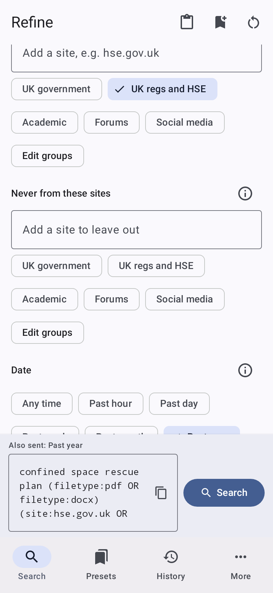
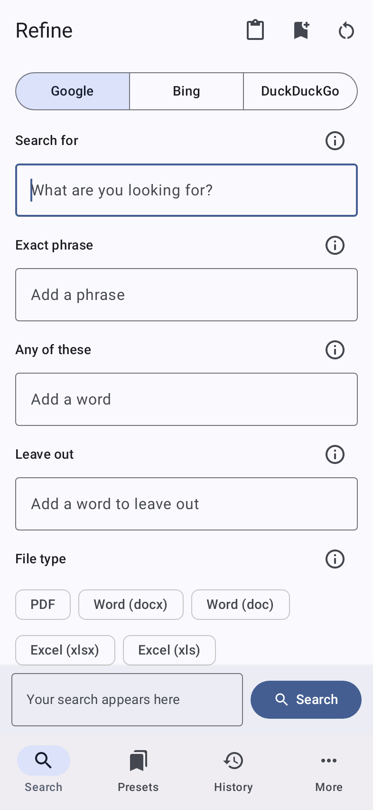
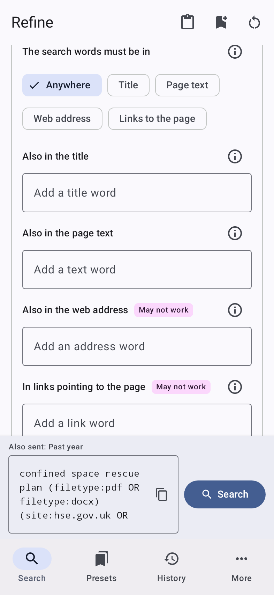
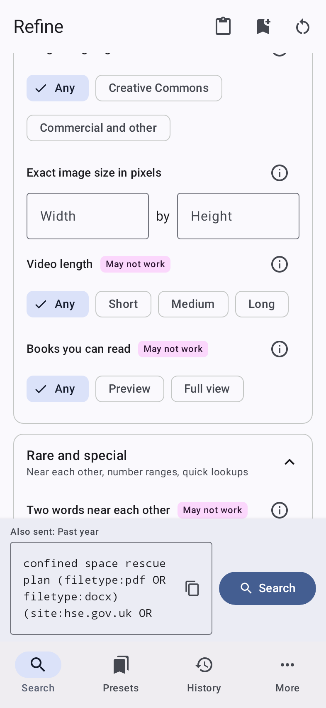
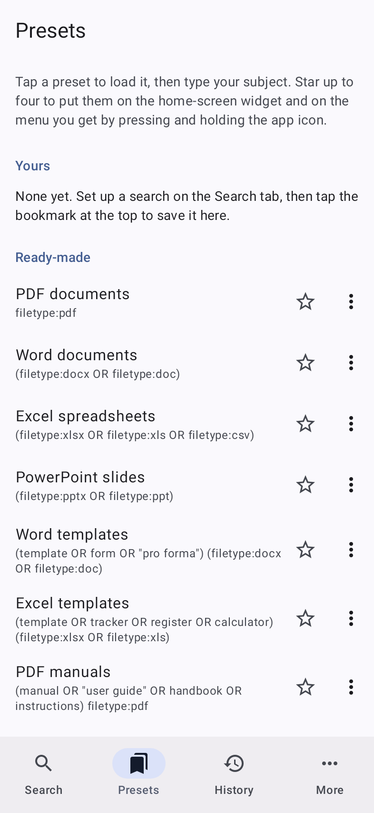
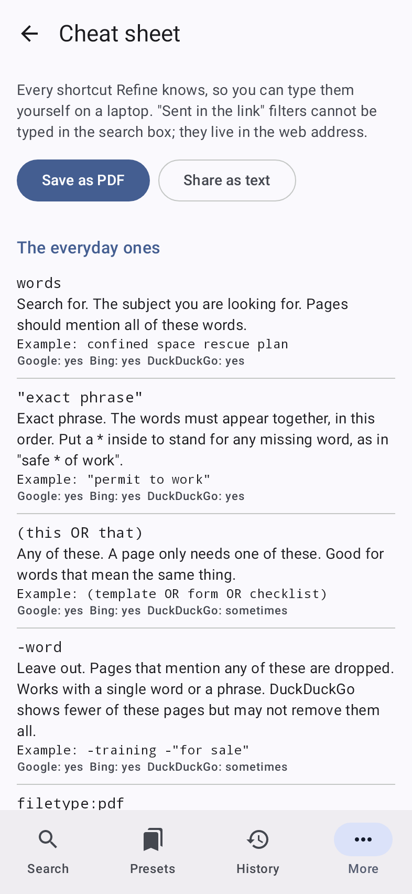
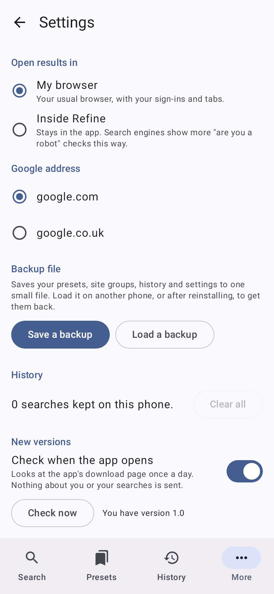

Find the file, not ten pages of adverts for it
Search engines have shortcuts that cut straight to what you want: only PDFs, only one website, only this year, never that word. Hardly anyone remembers them. Refine lets you tick what you want and writes the shortcuts for you.
It works with Google, Bing and DuckDuckGo, and opens the results in your own browser.
Download for AndroidHow to install
- Version 1.0
- Android 11 or later
- 3.1 MB
Free, with nothing to unlock. No adverts, no account with the developer, no tracking. Compare or read the release notes.
Chrome may say the file might be harmful. It shows this for app files that do not come from Google Play. Choose Download anyway.

- No subscriptionEvery feature is in the free app.
- No advertsNone in the app and none on this site.
- No accountNothing to sign up for.
- Your own browserResults open where you already search.
A look inside
These are the real screens, drawn from the app's own code. Swipe or scroll sideways to see them all.






How it works
There is nothing to buy and no account to make. Refine writes the search and hands it to your browser.
Type what you want
A few words about what you are looking for.
Tick the filters
File types, websites, dates, where the words appear, and the kind of result.
Search
Refine opens the results in your browser, on Google, Bing or DuckDuckGo.
Everything is in, and all of it is free
Nothing below is held back for a paid tier, because there is no paid tier.
Building a search
- Every shortcut that still works
- Search words, exact phrases, any-of words, words to leave out, file types, websites and dates.
- 34 file types
- The 15 most used on show, the rest one tap away, and a box for any other.
- Dates
- One-tap buttons for the past hour, day, week, month or year, or an exact From and To.
- Where the words appear
- Title, page text, web address, or links pointing to the page.
Results
- Kind of result
- Plain web links, images, news, videos, forums, books, shopping, maps, scholar, patents and jobs.
- Language and region
- Pages in a language, pages from a country, or searching as if from another country.
- Three engines
- Google, Bing and DuckDuckGo, and a note on any shortcut that may not work there.
Saving time
- Presets
- Save a search you run often and run it again with one tap.
- Cheat sheet
- Every shortcut explained, in the app and on this site.
- Copy the search
- Use it on your laptop too.
Your searches are your business
No servers
Refine has no servers. The developer never sees what you search for.
No ads, no tracking
There is no advertising, analytics or tracking, in the app or on this site.
Straight to the engine
Your search goes from your browser to the engine you chose, as it would without Refine.
Installing and updating
Refine is not on Google Play, so your phone asks a couple of extra questions the first time.
Download the app file
Tap Download on your phone. The file is called Refine.apk and is about 3.1 MB. If Chrome says the file might be harmful, choose Download anyway.
Allow the install
Open the file. The first time, Android asks you to allow your browser to install apps. Allow it, go back and tap Install. If Google Play Protect steps in, choose More details, then Install anyway.
Updating later
Refine tells you when a newer version is out. Install the new file over the old one and everything you have saved is kept.
Version 1.0, released 16 November 2026. See the release notes, or check your download.
Questions
Is Refine really free?
Yes. There is no paid version, no subscription and no adverts, and nothing in the app is locked.
Is Refine on Google Play?
No. Refine is a personal project and is downloaded from this site as an Android app file. It needs Android 11 or later, which covers almost every phone sold in recent years.
Are there really hundreds of Google shortcuts?
No. Google has about 25 typed shortcuts that work every time, a further handful that are hit-and-miss, and a dozen it has switched off. The rest of the power is in filters that live in the web address, such as exact dates, language, country and the kind of result. Refine has a box for all of the ones that still do something, and tells you which are hit-and-miss. The shortcuts page lists every one.
Does Refine see my searches?
Nobody connected with Refine does. The app builds a normal search link and hands it to your browser, exactly as if you had typed it yourself. Your history and presets are kept on your phone. The detail is in the privacy policy.
Why does a shortcut say “May not work”?
Search engines change their shortcuts without notice. One with that label has not been switched off, but it does not always do what it says. If a search looks wrong, that box is the first one to untick.
Does it work with Bing and DuckDuckGo?
Yes. Pick the engine at the top. Each one understands a different set of shortcuts, so Refine greys out the boxes that engine does not know and leaves them out of the search, and tells you which ones it left out.
Can I use the searches on my laptop?
Yes. Copy the finished search with one tap and paste it into any browser. The in-app cheat sheet lists every shortcut and can be saved as a PDF to keep by your desk.
How do I update Refine?
Refine tells you when it opens if a newer version is out. Download it from this site and install it over the one you have. Your presets, site groups and history are kept.
Search like you know every shortcut
Free, with no adverts and nothing to unlock. Made by the developer of several other free Android apps: see them all.